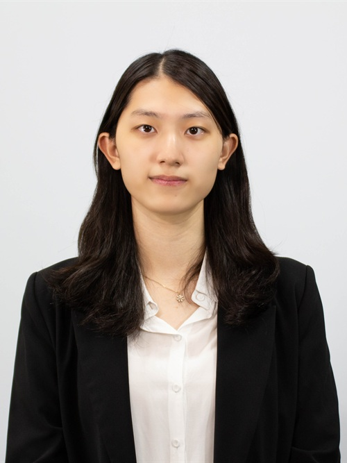
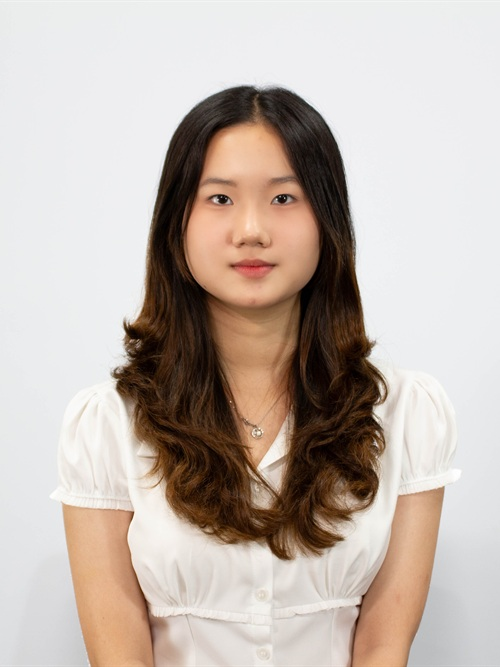

Dear Delegates,
Welcome to KISMUN 2026!
My name is Euna Ko, and I am delighted to welcome you to the United Nations Human Rights Council.
This conference marks my fourteenth and final MUN, which makes it especially meaningful to me. I had originally planned to conclude this journey as a delegate, but an unexpected opportunity has given me the privilege of serving as Chair of UNHRC, a committee for which I hold a special affection. It is a lovely surprise to finish my journey this way, and I am happy to share it with all of you.
Having served as Secretary-General of KISMUN 2025, I have seen how each delegate brings something special to a conference. I look forward to hearing your ideas and seeing you work together throughout our discussions. Whether this is your first MUN or you have attended many before, I hope you feel welcome, comfortable asking questions, and confident sharing your thoughts.
I am grateful to spend my final MUN with you, and I hope we leave with wonderful memories of our time together.
Warm regards,
Euna Ko
Chair of United Nations Human Rights Council
KISMUN 2026

Honorable Chairs, fellow delegates, and distinguished guests,
My name is Lee Eun Seo, and I am truly honored and excited to serve as a Chair of the UNHRC at KISMUN 2026.
It feels a little surreal to say that this will be my fourth KISMUN, my third as an LDP member, and my second as a Chair. I can still remember walking into my first KISMUN feeling nervous and unsure of what to expect. Now, I am incredibly grateful to be on the other side of the committee, welcoming delegates who might be feeling exactly the same way.
If you are nervous about speaking, raising your placard, or making a mistake, don't worry. We have all been there. KISMUN is a place to challenge yourself, meet new people, and slowly find the confidence to speak up.
This year's theme, "Voice your Value, Value your Voice," captures exactly what I hope you take away from this conference. Your ideas do not have to be perfect to be worth sharing, so don't be afraid to make your voice heard.
If you have any questions or concerns, please do not hesitate to reach out to me at eseoo.4.study@gmail.com. I would be more than happy to help, and I look forward to meeting you all at KISMUN 2026!
Warmly,
Lee Eun Seo
Chair of United Nations Human Rights Council
KISMUN 2026